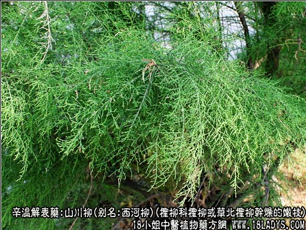
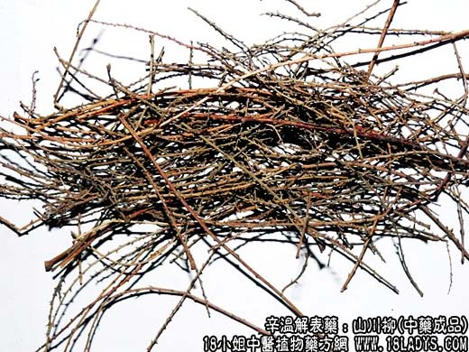
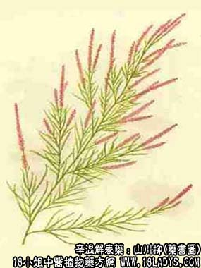

本品为常用中药。始载《开宝本草》。
别名：西河柳，柽柳。
来源：为柽柳科植物柽柳或华北柽柳干燥的带叶嫩枝，野生。
植物形态 ：柽柳：多年生灌木状小乔木，茎多分枝，柔弱下垂，表皮红褐色。叶互生，无柄，细小呈鳞片样的披针形，茎部稍抱茎。花呈复总状花序，顶生，苞片线状锥形，花淡红色。萼片及花瓣均为5片，花盘褐色呈瓣状。蒴果狭小，三瓣裂。
产地：全国大部地区均产。
性状鉴别：主要为带叶细嫩茎枝，间有粗枝夹杂。嫩枝直径0.5~1毫米带鳞状叶片。灰绿色或黄绿色。质脆易折断，断面黄白色。粗枝直径5毫米，红棕色，中央有髓。气香如茶叶，味淡。
以色绿，无粗枝者为佳。
主要成分：树皮含鞣质。
药理作用：发汗、解热、透疹、利尿；还可止咳（水提液腹腔注射对小白鼠有止咳作用）和抗菌（水提液对肺炎球菌、甲型链球菌、白色葡萄球蓖、流感杆菌在体外有一定抑菌作用）。
炮制：切咀，生用。
性味：甘、咸、平。
归经：人心、肺、胃三经。
功能：发汗透诊，解毒，利尿。
主治：麻疹难透，小便不利，解酒毒，洗皮肤风痒。
临床应用：主要用于麻疹初期的发热和疹出不透。配竹叶、牛蒡子、蝉蜕等，效力更好，方如竹叶柳蒡汤。外用熏洗亦可（方法同芜荽）。
使用注意：麻疹已透者不要使用，热病汗多，合并肺炎和全身衰弱也不要使用。此外，近年来西河柳还试用于治疗外感咳嗽和慢性气管炎。
用量：内服3~15g，外用90~150g。
处方举例：竹叶柳蒡汤(《先醒斋医学广笔记》)：竹叶9g，西河柳15g，葛根4.5g，牛蒡子4.5g，蝉蜕3g，薄荷3g（后下），荆芥3g，知母3g，玄参6g，麦冬9g，甘草3g，水煎服。